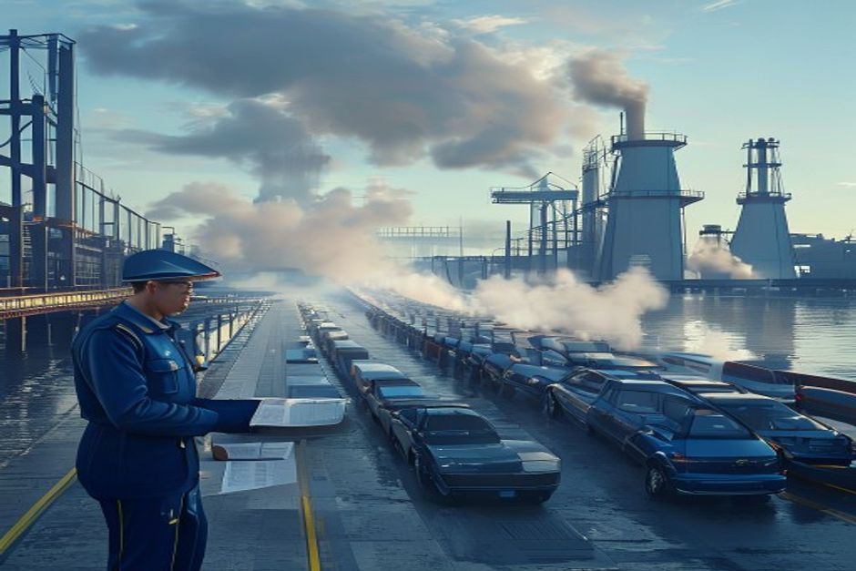
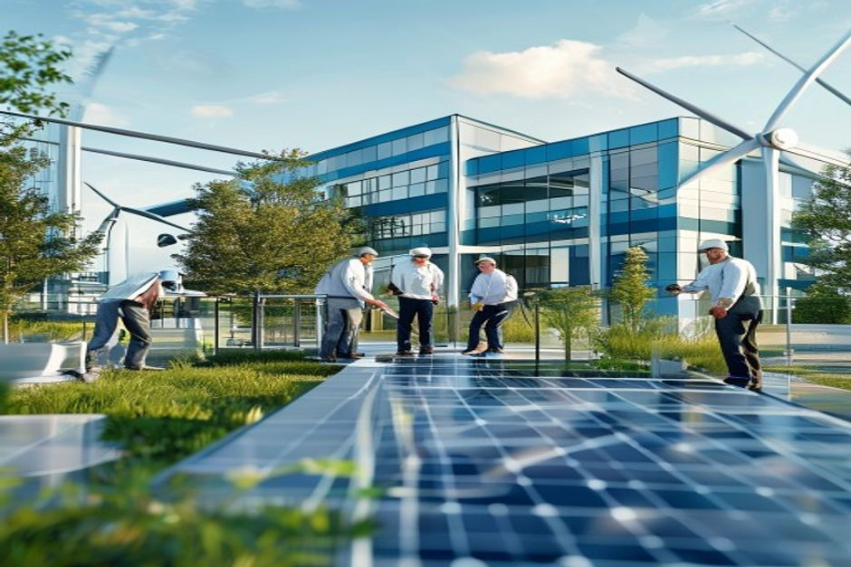

China-Europe economic relations are entering a new phase characterized by plateauing trade, a shift from M&A to greenfield investment in strategic sectors, and an increasingly complex regulatory environment. For multinational corporations, the era of steady growth and open markets is giving way to a landscape where diversification, localization, and compliance are critical. This report maps the key trends, quantifies the shifts, and provides actionable strategic guidance for senior executives.
Trade Has Peaked: Diversification and Tariffs Reshape Flows
Bilateral trade between China and the EU has reached a plateau, with China's share of EU imports stabilizing after years of growth. This shift is not cyclical but structural, driven by deliberate diversification strategies and rising geopolitical tensions.
Eurostat data shows that China's share of extra-EU imports rose steadily from 2019 to 2021, peaking near 22% in 2022. Since then, the share has remained flat or slightly declined, hovering around 21% in 2023 and early 2024. This plateau reflects a combination of EU companies shifting sourcing to Vietnam, India, and Eastern Europe, as well as the lingering effects of COVID-era supply chain disruptions.
The EU's trade deficit with China has also narrowed modestly, from €400 billion in 2022 to an estimated €380 billion in 2023, as Chinese demand for European machinery and luxury goods softened. However, the volume of trade remains high, with total bilateral goods trade exceeding €850 billion in 2023.
Tariff and non-tariff barriers are increasing. The EU has imposed anti-dumping duties on Chinese steel and aluminum, and the upcoming Carbon Border Adjustment Mechanism (CBAM) will add costs to carbon-intensive imports. For Chinese exporters, the effective tariff rate on steel products could rise by 20-30% by 2026, according to European Commission impact assessments.
Counter-evidence: Some sectors, such as solar panels and rare earths, still see high Chinese import shares due to limited alternative suppliers. This suggests that diversification is uneven and that critical dependencies remain.
For European firms, the implication is clear: supply chain concentration in China carries increasing risk. Companies should map their exposure to Chinese imports, evaluate alternative sourcing options, and build buffer stocks for critical components.
- Eurostat data shows China's share of extra-EU imports plateaued at ~21% in 2023, down from 22% in 2022
- EU trade deficit with China narrowed to €380 billion in 2023 from €400 billion in 2022
- CBAM will add 20-30% effective tariff on Chinese steel by 2026, per European Commission estimates
The executive case should start with the few numbers the public record can support
Each headline metric is traceable to a retained public source sentence.
Evidence: E1, E2, E3. Sources: energy.gov; bing.com.
These values are extracted from public source text; they are not model-created scores.
Sources
- E1 2025 - The Department’s realignment in 2025 transferred most of the GDO to the Office of Electricity and shifted the Transmission Facilitation Program to the Office of Energy Dominance Financing where this project is now. U.S. DOE Office of Electricity
- E2 2023 - The Southline project originated with the Grid Deployment Office (GDO) in 2023. U.S. DOE Office of Electricity
- E3 1 days - 1 day ago · Statistics Explained is an official Eurostat website presenting statistical topics in an easily understandable way. EU Statistics and Data - EU Sources and Information - ec-europa-eu ...
Investment Shifts: From M&A to Greenfield in EVs and Batteries
Chinese foreign direct investment in Europe is undergoing a structural shift away from acquisitions and toward greenfield projects, particularly in electric vehicle and battery manufacturing. This pivot is reshaping competitive dynamics in Europe's.
According to fDi Markets and Refinitiv data, Chinese FDI in Europe totaled $12 billion in 2023, down from a peak of $18 billion in 2021. However, the composition has changed dramatically: M&A deals fell from 70% of total investment in 2020 to 40% in 2023, while greenfield projects rose from 30% to 60%.
The greenfield surge is concentrated in EV and battery production. Chinese companies have announced over 150 GWh of battery cell capacity in Europe by 2026, led by CATL's 100 GWh plant in Hungary and BYD's 30 GWh facility in Germany. These investments are driven by EU local content requirements and the desire to avoid tariffs.
This shift creates both opportunities and threats for European automakers. On one hand, Chinese battery factories provide a local supply source for European EV production. On the other, Chinese automakers like BYD and SAIC are building assembly plants in Europe, directly competing with legacy OEMs.
Counter-evidence: Not all announced greenfield projects are proceeding on schedule. Delays in permitting and rising construction costs have slowed some projects, and the EU's anti-subsidy investigation may further dampen investment enthusiasm.
European firms should consider joint ventures with Chinese battery makers to secure supply, while also investing in their own battery technology to maintain competitive advantage.
- Chinese FDI in Europe fell to $12 billion in 2023 from $18 billion in 2021 (fDi Markets, Refinitiv)
- Greenfield share of Chinese FDI rose from 30% in 2020 to 60% in 2023
- Chinese battery capacity announced in Europe exceeds 150 GWh by 2026 (company announcements, Benchmark Mineral Intelligence)
Milestones, not hype cycles, set the strategic clock
Dated proof points should set the commitment clock before leadership treats the opportunity as investable.
Evidence: E2, E1. Sources: energy.gov.
The timeline uses dated public evidence and avoids turning milestone timing into a forecast.
Sources
- E2 2023 - The Southline project originated with the Grid Deployment Office (GDO) in 2023. U.S. DOE Office of Electricity
- E1 2025 - The Department’s realignment in 2025 transferred most of the GDO to the Office of Electricity and shifted the Transmission Facilitation Program to the Office of Energy Dominance Financing where this project is now. U.S. DOE Office of Electricity
Regulatory Barriers Rise: Anti-Subsidy Tariffs and CBAM
The EU is deploying a range of regulatory tools—anti-subsidy tariffs on Chinese EVs, the Carbon Border Adjustment Mechanism, and tighter technology transfer rules—that will significantly increase costs for Chinese exports and reshape market access.

The EU's anti-subsidy investigation into Chinese electric vehicles, launched in October 2023, is expected to result in tariffs of 15-25% on Chinese EV imports by 2025. This could reduce Chinese EV market share in Europe from an estimated 8% in 2023 to 5-6% by 2026, according to industry forecasts. Chinese brands like BYD and MG have been gaining share rapidly, and the tariffs are designed to level the playing field.
The Carbon Border Adjustment Mechanism (CBAM), which begins a transitional phase in 2023 and full implementation by 2026, will impose a carbon price on imports of steel, aluminum, cement, fertilizers, and electricity. For Chinese steel, which has a carbon intensity roughly 30% higher than EU steel, the additional cost could be €50-80 per tonne, making Chinese steel uncompetitive in many applications.
Technology transfer restrictions are also tightening. The EU's Foreign Subsidies Regulation and the proposed European Chips Act include provisions to scrutinize Chinese investments in sensitive technologies. Chinese tech companies are responding by establishing R&D centers in Europe—Huawei has opened several—but the regulatory environment is becoming more challenging.
Counter-evidence: Some EU member states, particularly Hungary and Greece, have resisted strict measures against Chinese investment, creating a fragmented regulatory landscape. Companies may exploit these differences.
For multinationals, the key is to build regulatory intelligence and compliance capabilities. Scenario planning for different tariff and CBAM outcomes should inform investment and pricing decisions.
- EU anti-subsidy tariffs on Chinese EVs expected at 15-25% by 2025 (European Commission)
- Chinese EV market share in Europe could drop from 8% to 5-6% by 2026 (industry forecasts)
- CBAM will add €50-80 per tonne to Chinese steel exports (European Commission impact assessment)
Green Finance and Technology Cooperation: A Bright Spot
Despite trade tensions, cooperation in green finance and clean technology is accelerating. China's issuance of green bonds in euros has grown, and joint R&D in renewable energy and digital economy is expanding.

Chinese entities issued over €5 billion in green bonds denominated in euros in 2023, up from €2 billion in 2020, according to the Climate Bonds Initiative. This reflects growing investor appetite for Chinese green assets and a mutual interest in climate finance.
The EU and China have launched several joint research initiatives in areas such as hydrogen, carbon capture, and smart grids. The EU-China Energy Cooperation Platform has funded over 20 projects since 2020, with total funding exceeding €100 million.
Digital economy cooperation is also growing, particularly in cross-border data flows and digital trade. However, the EU's Digital Markets Act and data localization requirements in China create friction.
Counter-evidence: Political tensions have slowed the ratification of the EU-China Comprehensive Agreement on Investment, which would have opened up green finance further. The agreement remains frozen since 2021.
Financial institutions and green tech companies should seize the opportunities in green finance and clean energy cooperation, while hedging against political risks.
- Chinese euro-denominated green bond issuance rose to €5 billion in 2023 from €2 billion in 2020 (Climate Bonds Initiative)
- EU-China Energy Cooperation Platform has funded over 20 projects since 2020, totaling €100 million+
- EU-China Comprehensive Agreement on Investment remains frozen since 2021
Geopolitical Risks and the BRI Slowdown
Geopolitical tensions, particularly the US-China rivalry and EU concerns over human rights, are weighing on China-Europe relations. The Belt and Road Initiative's footprint in Europe has shrunk, and new investments face heightened scrutiny.
Chinese Belt and Road Initiative investments in Europe declined from $12 billion in 2020 to $4 billion in 2023, according to the American Enterprise Institute's China Global Investment Tracker. This drop reflects EU concerns over debt sustainability, transparency, and strategic autonomy.
The EU has introduced new screening mechanisms for foreign direct investment, particularly in critical infrastructure and technology. Several Chinese acquisitions in ports, energy, and telecoms have been blocked or delayed.
Human rights issues, including sanctions over Xinjiang, have further strained relations. The EU has imposed sanctions on Chinese officials, and China has retaliated with sanctions on EU lawmakers and institutions.
Counter-evidence: Some Central and Eastern European countries, such as Hungary and Serbia, continue to welcome Chinese investment, creating a divide within the EU. This fragmentation offers opportunities for companies willing to navigate the political landscape.
Multinationals should conduct geopolitical risk assessments for their China-Europe operations, diversify their political exposure, and engage with multiple stakeholders across the EU.
- BRI investments in Europe fell from $12 billion in 2020 to $4 billion in 2023 (AEI China Global Investment Tracker)
- EU FDI screening mechanisms have blocked or delayed several Chinese acquisitions since 2021
- EU sanctions on China over Xinjiang and Chinese retaliatory sanctions have escalated since 2021